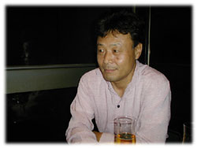
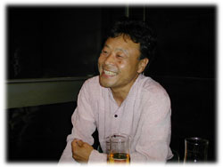

|
■「要求が細かいんだもの、三谷さん」
--撮影監督・高間賢治というと、イコール、カネコ映画（金子修介監督作品）のイメージが僕なんか強いんですが。初期金子作品のリリカルなルックスを決定したというか、相性も良さそうで。
高間 金子さんとは５、６本組んで、最も多いですね（『1999年の夏休み』ほか）。いつも一緒にやりたいんだけど、金子さんからは映画化が正式決定してから声が掛かるんです。他の監督は結構アバウトで、「ヨロシク！」的に、来年のいつ頃空けといて、と（笑）。
--で、企画がつぶれたり。よくある話だ（笑）。その点、金子さんは誠実なんだ。
高間 ええ。金子さんから声が掛かった時には他の予約が入っていたり、というのが最近は多くて。それに彼もメジャー（大手映画会社）で撮る事が多くなると、カメラマンはこの人で、という制約もあるらしくてね。
--でも、高間さんは自分の画を押しつけるタイプでもありませんよね。
高間 監督が100人いれば100通りの撮影になりますよ。金子さんとやれば金子さんに（自分の）顔も似てくるし、椎名誠さんとやれば椎名顔になってて、使う言葉も変わってくる。カメラマンよりカメレオンだね（笑）。俺のホントはどれなの‥‥‥?
--椎名さんや三谷幸喜さんも、異業種から監督になったばかりだから、割と高間さん頼りの部分もあるでしょう。実際、高間さんが現場仕切っちゃってんじゃないですか。
高間 そんな事ないですよ。どういうテイストでいくかを監督が決めて、その方向性をくみとってやってます。
--今度の三谷監督作『みんなのいえ』なんか、強引なワンシーン・ワンカットでいきますよね（笑）。
高間 前回『ラヂオの時間』のファースト・シーンの長回し（カットを細かく切らずに、カメラを回し続けること）がウケたので、クセになったらしくて（笑）。最初は全編、手持ちカメラの長回しとさえ言ってたんですよ、ウディ・アレン的な狙いと発想のようで。要求が細かいんだもの、三谷さん。
--それに逆らわないのが高間スタイルだと‥‥。
高間 面白いんですよ。自分がこうやりたいというより、自分にはない発想やカットが監督から出てくるから。よし、やっちゃおうと。カメラワークの難しさを知らないから要求出来るところもあるんでしょうが。この本『シーナ映画とコーキ映画』を読んで、アー大変だったんですねって、三谷さん（笑）。
--人ごとか（笑）。ベテランのカメラマンで、相手が新人監督ならつっぱねるカメラマンもいるでしょう。あの長回しは、演劇人の考える長回しだと思いますね。（『みんなのいえ』で）天井裏からリビングに下りる、現実にはあり得ない視点のカメラの動き。あそこは映画的面白さが活きてましたけど。
高間 あそこは長回しじゃなく、オーバーラップ（ショットとショットを重ね合わせる方法）なんです。本当はモーションコントロール・カメラを使うところなんですが、「人間モーションコントロール」で何とかいけるだろうと（笑）。パンダウンして（カメラを上から下にふって）、天井板の黒味の部分で日にちが替わったという設定で、実際撮影した日も別ですが、縦にワイプして（画面を端から段々と消して）つないでいる。
--ヒッチコックの『ロープ』をもっと精密にしたノリですかね。高間さんは現場ではカメラを覗かない人だと思っていたら、この本によると覗いているんですね、最近は。
高間 今回『みんなのいえ』はワンシーン・ワンカットなので覗いています。オペレーターとしても上手いですよ、僕は（笑）。

■カメラマンは、そこにあるものから創造する
--高間さんはハリウッド的な撮影監督システムを採用されてる方で、高間さんが照明やアングル等全てを決定した後は、指示通りにチーフ助手あたりが本番の時にカメラを覗いてオペレートしている。他にはどんな方が撮影監督システムを？
高間 長田勇市さんなどもそうですね。『式日』（庵野秀明監督）の時は全部女性のオペレーター（笑）。彼はスチール・カメラマンを兼ねて、ギャラ稼いでた。
--今はたいてい、どの現場もビジコン（撮影カメラと同じものが見られるビデオ装置）があるから自分でカメラを回さなくていいとは思うけど、昔はよくそんな怖い事が出来るよな、と感心しましたよ。
高間 もちろん、ひやひやした時もありましたよ。よけいな物が写った時もあるし。でも金子さんも面白がって、実験してみようと言ってくれたので。今はビジコンがあるので、ラッシュ（未編集のフィルムを確認する作業）の時に勝負！ という、予期せぬ感動やガッカリは無いよね。もう撮り直したり、バクチ的な部分は許されないから。でも、今でもモニター覗かない監督はいますよ。現場の俳優の芝居だけを観てて。昔の監督は、経験から、今どんな画が撮られているのか、見事に頭に入ってるんですね。
--以前、僕はビジコンの仕組みが分からなかった（笑）。どこにビデオカメラがあるんだろ、どこにあっても本体のカメラとアングルが違うだろ、と。あれは本体のカメラのファインダーを小型ビデオカメラが写している、という理屈なんですね。それなら同じ画がモニターで観られるわけだ。
高間 長回しした『みんなのいえ』など、監督がいる場所もないので、別の部屋でモニターを観てもらってる。モニターも鮮明に見えるわけじゃないけど、役者さんの微妙な表情についてとか、ちゃんと注文してましたよ。ビジコン以降、カメラマンも撮ってしまえばこっちのもの、というわけにはいかないしね。昔も、監督とカメラマンがもめた場合は、監督パターンとカメラマン・パターンの両方撮ってた。でも編集では結局、監督パターンが使われる（笑）。
--本来、両者は夫婦関係みたいなものだから、互いの持ち味を分かった上でプロデューサーが組み合わせれば理想なんだろうけど、そういうゆとりもない時代だし""。
高間 それに大カメラマンのように自分の資質ばかり押し通しても、発展がないし面白くないですよ。じゃあ自分の個性って何なの？ とも思うけど、こんな僕でも選んでくれたということは、（僕が）「出来ません」って言わない事に個性のかけらでも有るのかな、と。昔はそういうの、軽蔑されたけどね。
--この本にもありますが、高間さんは、撮影や照明を数学的、化学的に裏づけているというか、論理的なカメラマン、というのが特徴じゃないですか。
高間 それと経済的なとこ（笑）。
--いっそ、監督までやってみたい、と思われる事はないんですか？
高間 一度テレビでやった事あるんですよ。才能なかった（笑）。脚本家や監督とは違って、無から創り出す力は僕にはないな。カメラマンはそこにあるものから、さらに創造していくわけで。逆に監督の気持ちは理解出来ましたね。ああ、こう言いたかったのね、こうしたかったのね、と（笑）。照明などでも、「いらん事やって」と思う時もあるよね。それで僕は（撮影監督がカメラと照明をコントロールできる）撮影監督システムをとってるわけだけど。
--撮影所によっても、いろいろとクセがありますしね。
高間 やってきた方法論が違うから、全然話が通じない。助手さんレベルでは理解してくれる人もいるけど、なかなか撮影監督システムに賛同してくれる照明マンがいなくて。まあ、照明マンの一番オイシイところを持っていくようなもんだから、無理ないけど（笑）。やっと、椎名誠監督の『あひるのうたがきこえてくるよ。』から、照明の上保正道さんと仕事出来るようになって。彼はＣＭ界出身だから、周りの反発もなかったのかもしれませんが。
--高間さんが日本映画照明協会に入っちゃえばどうですか。
高間 あ、照明マンから撮影監督になった人はいますよ。三好和宏さん（撮影監督作にビデオ映画『難波金融伝』シリーズほか）。クレジットには「撮影・照明」と出してる。アメリカではガファー（チーフ・ライティング・テクニシャン）から撮影監督になる例はあるみたい。

■フィルムがこの世から消える !?
--ハリウッドといえば、ＣＧの比重がもの凄い事になってるわけですが、この事態は撮影監督的にはどうなんですか？
高間 いや、カメラマンのフォローは必要だと思いますよ。フルＣＧはともかく、実写にはめ込むならアドバイスや話の詰めは絶対に必要でしょう。そうしないとリアルに見えない。
--フィルムとビデオの関係は？ フィルムは無くなる!?
高間 50年後には。10年という人もいるけど。好み的には奥深いフィルムの方がいいけど、素材に合わせた方法論で、ビデオの用途は多彩で面白いですよ。
--本当はそういった所に興味さえ行かないのが面白い映画なんでしょうが。
高間 そうだと思うな。
--でも、撮影に興味を持てば、また全然違う映画の楽しみが味わえる。今やDVDの時代だし、二度三度と。自分の眼をカメラのレンズにして観ると、思わぬ面白さが。
高間 僕はアカデミー会員で自由に劇場に入れるので、途中から入るんです。物語がわからないから、わずらわされずに画を観れる。面白そうなら、もう一回アタマから。日本に来るアメリカ映画で、劇場公開されるものなら、どんな無名の撮影監督でも上手いと思うなあ。フランス映画は時々、何でこんな照明を、と思うものも時々あるけど。
--高間さんの撮影だと、やっぱり移動に味がありますよね。
高間 移動撮影好きです。フィックス（カメラを固定させる）はあまり面白いと思わないので、監督がどっちでもいいと言うなら、すぐレールをひきます（笑）。そういえば、昔『風の又三郎』（伊藤俊也監督）の時に、塩田さんが「これは宮沢賢治の映画ではない、高間賢治の映画である」と書いてくれて。実際、ヨコハマ映画祭などでも撮影賞を頂いたんですが、（観客は）物語の方に気が行かなくて、面白くなかったのかなあ、と""。
--そりゃ、考え過ぎですよ（笑）。宮沢賢治の作品は誰でも知っているわけで、さらに興味が撮影に向かったんですよ。まあ、「賢治」つながり、というシャレもあったけど（笑）。
高間 実は親父も、宮沢賢治を意識して名前をつけたんです。
--やっぱり（笑）。
高間賢治（たかま・けんじ）
1949年生まれ。81年に渡米、ハリウッドとニューヨークで一年間、撮影技術を学ぶ。『1999年の夏休み』『あひるのうたがきこえてくるよ。』ほか撮影賞多数。『ラヂオの時間』では日本アカデミー賞優秀撮影賞を受賞する。『ナビィの恋』『ムルデカ17805』など、手がけた劇映画は30本に及ぶ。訳書（共訳）に『マスターズ・オブ・ライト』（フィルムアート社）。
|